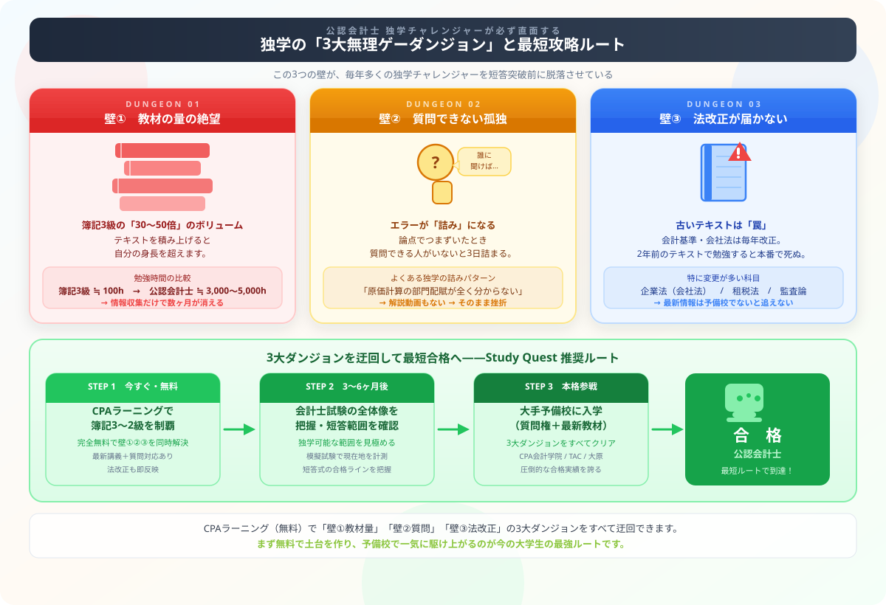

公認会計士の独学は可能か？
3,000時間勉強して分かった「無理ゲーの壁」と最短攻略法
こんにちは、大谷です！実は、公認会計士を独学で目指そうと決めた日、近くの書店の参考書コーナーに行ってみたんです。財務会計のテキストだけで3冊、管理会計・監査論・企業法もそれぞれに問題集つきで並んでいて……全部を積み上げたら本棚の棚2段が完全に埋まりました。合計金額が15,000円を超えた瞬間、『うわっ、なんじゃこりゃ……！これを独学でやり切るのか！？絶対無理ゲーじゃん！』と激しくフリーズしました（笑）。
だからこそ、当時の僕と同じように「本当に独学でいけるのか？」と不安になっている皆さんに、3,000時間この試験と向き合ってきた体験から正直に話せることを全部お伝えします！また、僕のモチベーション維持のために、記事の末尾のほうにある【いいねボタン】をポチッと押してもらえると、めちゃくちゃ嬉しいです！
「予備校代が数十万円もする。でも公認会計士になりたい。独学でなんとかならないのかな？」
この記事を読んでいるあなたは、きっとそう思っていますよね。正直に言います。独学で合格することは、完全に不可能ではありません。でも、毎年何百人もの独学チャレンジャーが途中で脱落しています。その理由を、3,000時間以上この試験と向き合ってきた僕の体験をもとに、正直に話させてください。
この記事を読み終わる頃には、「今すぐ自分がすべきこと」が具体的に見えているはずです。
まず現実を知ってほしい——公認会計士試験の「本当の規模感」
大手予備校のサイトを見ると「合格に必要な勉強時間は3,000〜5,000時間」と書いてあります。でも最初はこの数字の感覚がまったくピンとこないんですよね。
こうイメージしてみてください。毎日4時間勉強したとして、3,000時間 = 約2年5ヶ月。毎日欠かさず、土日も、お正月も、体調が悪い日も。それが現実です。
合格に必要な勉強時間
合格に必要な勉強時間
合格に必要な勉強時間
簿記3級と比べると、30〜50倍のボリュームです。では、その時間は何に使うのか。試験の構造を確認しましょう。
管理会計論（原価計算）
監査論
企業法（会社法）
管理会計論（記述式）
監査論（記述式）
企業法（記述式）
租税法＋選択科目
僕が最初に公認会計士を目指そうと決めた日、近くの書店に行って参考書コーナーを眺めたんです。財務会計のテキストだけで3冊。管理会計で2冊。監査論・企業法も各2冊ずつ。問題集もそれぞれにある。
全部買い揃えてみたら、15,000円を超えていました。積み上げてみたら本棚の棚2段が埋まりました。そして気づいたんです。「あ、これ予備校に行った方が安い……」と。
独学の「3大無理ゲーダンジョン」——これが本当の壁です

独学が難しい理由は「ただテキストが多い」だけじゃありません。3つの構造的な壁があります。
壁① 教材の量の絶望——「消えない問題集地獄」
公認会計士試験の財務会計論は、日商簿記1級の範囲を完全に包含しつつ、さらに連結会計・企業結合・退職給付会計・金融商品会計などの高度な内容が積み重なっています。簿記2級をある程度勉強したことがある人でも「え、簿記ってそんな深いの？」と頭が真っ白になる内容です。
財務会計論だけで、僕が使ったテキストと問題集を全部並べると横1.5メートルを超えます。解いた問題集のページを全部重ねたら、軽く10cm以上になります。これを「全科目で」やる必要があります。
特に辛かったのが、問題集が「終わらない」んです。1回解いて終わりじゃなく、最低3〜5周しないと試験に使えるレベルにならない。それを6〜7科目でやる。「問題集を全部終わらせた」という達成感が、独学では一生来ない感覚に陥ります。
壁② 質問できない孤独——1つの「詰み」が致命傷になる
独学最大の壁はこれだと、僕は思っています。
公認会計士試験には「パッと理解できる」論点と「なぜそうなるのか、構造的に理解しないと使えない」論点があります。後者でつまずいたとき、質問できる相手がいないと、その論点が3日たっても、1週間たっても解決しないことがあります。
管理会計論の「原価差異分析」で詰まったことがあります。テキストを何度読んでも「なぜこの式になるのか」がわからない。YouTubeで検索しても、会計士レベルの解説動画がほとんどない。他の参考書を買って読んだけど、説明の仕方が違うだけで本質は変わらない。
結局3日間そこで足踏みしました。予備校の友人に聞いたら「あ、それ先生が授業で図解してくれたよ、5分で分かったよ」と言われました。正直、泣きそうになりました。
これは極端な例ではありません。試験の論点には「先生に聞けば5分、独学だと3日」という類のものが、全科目を通じて数十箇所あります。これが積み重なると、純粋に勉強時間が予備校生より200〜300時間多く必要になります。
予備校生と独学生の差は「教材の差」だけではありません。「詰まったとき5分で解決できるか、3日かかるか」という差が、数百時間単位の差を生みます。
壁③ 法改正のアップデートが届かない——古い教材は「罠」
公認会計士試験で問われる内容は、毎年少しずつ変化しています。
- 企業法（会社法）：令和元年・令和3年の会社法改正で出題範囲に大きな変化
- 監査論：監査基準が毎年改訂される。古い基準で勉強すると本番で罠になる
- 租税法：毎年の税制改正大綱で税率・控除額が変わる
- 財務会計論：収益認識基準（ASC 606準拠の新基準）など、近年の基準改訂が多い
メルカリ・ブックオフで入手できる2〜3年前の予備校テキストは、法改正・基準改訂が反映されていない可能性があります。最悪の場合、試験に出ない論点を数百時間勉強することになります。予備校テキストを使うなら、必ず最新年度版を入手してください。
それでも「無料から始める」のは正しい選択です
ここまで読んで「じゃあ結局、今すぐ予備校に入れってこと？」と思ったかもしれません。でも、そうじゃないんです。
公認会計士試験の財務会計論は、日商簿記1級の内容を完全に土台にしています。逆に言えば、簿記1級レベルの知識がない状態で予備校に入っても、講義についていけずに挫折するパターンが実際に多い。
だから、正しい順番はこうです。
公認会計士試験は3,000〜5,000時間かける長期戦です。向いていないと分かってから予備校代50万円を払うのは最悪の結果。まず無料で会計の土台を作りながら、「自分はこの勉強を続けられそうか」を確かめてから投資するのが賢明です。
Study Quest流 公認会計士 攻略ロードマップ
RPGで言えば、公認会計士試験は「ラスボスが複数いる高難易度ダンジョン」です。いきなり装備なしで突入しても全滅します。まずは初期装備を整えてから、段階的に進んでいきましょう。
この段階で「財務会計の勉強が苦じゃない、むしろ楽しいかも」と思えたなら、公認会計士への適性が高い証拠です。
1級の勉強を通じて「自分は続けられる」という自信が持てたなら、いよいよ本格的なダンジョンに挑む準備ができています。
予備校で手に入るのは「最新教材」「質問権」「合格者コミュニティ」の3つです。独学の3大無理ゲーを全部まとめて解決してくれます。費用は高く見えますが、合格までのトータル時間を考えると、最終的に最も安い選択肢になります。
試験合格後は補習所で3年間の実務補習を修了し、修了考査に合格すると「公認会計士」として登録できます。
予備校選び——CPA会計学院 vs TAC、何が違うのか
大手予備校を選ぶ段階になったとき、主な選択肢は2校です。それぞれの特徴を正直にまとめました。
| 比較項目 | CPA会計学院 | TAC |
|---|---|---|
| 合格実績 | 近年急増。2023年の合格者占有率が初めて1位に（業界内で話題） | 長年の最大手。合格者数・ブランド力ともに圧倒的 |
| 費用（2年コース目安） | 50〜60万円前後 | 60〜70万円前後 |
| 教材の質 | オリジナルテキストが体系的で評判が高い。CPAラーニングと内容が連続している | 膨大な問題演習量が強み。過去問対策が徹底している |
| 質問対応 | チューター制度が充実。毎日質問できる | 講師への直接質問が可能。教室が多く通いやすい |
| Web受講 | 完全Web対応。地方・社会人に人気 | Web＋通学の選択肢が豊富 |
| こんな人に向いている | CPAラーニングから継続して学びたい人 コスパ重視の人 |
大手の安心感を重視する人 通学で仲間を作りたい人 |
CPAラーニングで学んだ後にCPA会計学院に入ると、教材の文体・説明スタイルが連続しているので馴染みやすいです。まず無料で試して、「この教え方が合う」と感じたらそのままCPA会計学院に進むのが自然な流れだと思います。
よくある質問
この記事が少しでもあなたの攻略の参考になったなら、この下にある【いいねボタン】をポチッと押してもらえると、めちゃくちゃ励みになります！一緒に挑戦の旗を立てましょう！